CompTIA A+ 220-1201 · Domain 1: Mobile Devices
Objective 1.1
Monitor Mobile Device Hardware & Use Appropriate Replacement Techniques
VMSOIT · Shaheens of IT
What We're Covering · 02
Agenda
Exam Objectives · 03
Learning Objectives
Section 01 · 04
Connection Methods
Mobile devices communicate with peripherals and networks through a variety of wired and wireless connection methods. Understanding which standard to use — and when — is a core skill tested on the CompTIA A+ exam.
In this section we cover USB standards, Lightning, Thunderbolt, Bluetooth, NFC, IR, and mobile hotspot tethering — mapping each directly to Objective 1.1 so nothing is missed.
Connection Methods · 05
Connection Methods
Ways mobile devices link to peripherals and networks — using wired or wireless technologies to transfer data, sync information, or provide internet access to the end user.
We break down both wired and wireless communication methods, covering how each works, when to use it, and what the exam expects you to know about each standard.
Wired Connections · 06
Universal Serial Bus (USB)
USB is the most common wired connection standard for mobile devices. It carries both power and data over a single cable, making it the go-to choice for charging and file transfer between phones, tablets, and computers.
USB-C is now the dominant connector — reversible, fast, and capable of carrying DisplayPort and Thunderbolt signals. Older devices use microUSB or the proprietary Apple Lightning port, both of which the exam expects you to identify by sight.
USB standards differ in transfer speed: USB 2.0 peaks at 480 Mbps, USB 3.0 at 5 Gbps, and USB 3.2 Gen 2 at 10 Gbps. Speed and connector type are separate — a USB-C port can be USB 2.0 speed.
Wireless Standards · 07
Wireless Connection Methods
Step-by-Step · 08
Battery Replacement Procedure
Mobile Accessories · 09
Common Accessories — Click to Expand
Display Technology · 10
LCD vs OLED Displays
LCD (Liquid Crystal Display) panels use a backlight behind a liquid crystal layer to produce images. The backlight is always on, so true black is impossible — the crystals simply block most of the light, producing very dark grey at best.
OLED (Organic Light-Emitting Diode) displays work differently: each pixel generates its own light. When a pixel is black it is completely off, producing perfect black and enabling infinite contrast ratios. This also means OLED screens can be thinner and more power-efficient when displaying dark content.
For the exam, know that LCD requires a backlight and cannot achieve true black, while OLED pixels self-illuminate. AMOLED (Active Matrix OLED) is the version used in most Android flagship phones — it adds a thin-film transistor layer for faster pixel switching.
Hardware Components · 11
SIM Card Types
A SIM (Subscriber Identity Module) card stores the credentials that identify a phone to the cellular network. The physical size of the SIM has shrunk over generations while its function has remained unchanged.
Standard SIM, microSIM, and nanoSIM all carry the same gold contact chip — only the plastic frame around it differs. eSIM is embedded directly onto the motherboard, requiring no physical card at all. The carrier profile is provisioned over the network instead.
Fig 1 — SIM card form factors: Standard · microSIM · nanoSIM · eSIM

Connection Methods · 12
Universal Serial Bus (USB)
The most widely used wired connection standard for mobile devices — carrying both power and data over a single cable. USB-C offers faster speeds and reversible plugs, while microUSB and miniUSB remain on older legacy devices still in the field.
Compare & Contrast · 13
USB-C vs Lightning
- Universal — used across Android, laptops, tablets, and accessories
- Reversible — symmetrical connector inserts either way up
- Power Delivery — supports up to 240 W on USB PD 3.1
- Multi-protocol — carries USB, Thunderbolt, DisplayPort, and HDMI
- Proprietary — Apple-only, not compatible with USB standard
- Speed Limited — maxes out at USB 2.0 speeds (480 Mbps)
- Being Phased Out — Apple moving to USB-C on newer iPhones
- Adapter Required — needs a Lightning-to-USB-A or USB-C adapter
Three-Way Comparison · 14
USB Speed Standards
- 480 Mbps max transfer speed
- Common on older phones and accessories
- Lightning ports limited to this speed
- 5–10 Gbps transfer speed
- Blue port colour on USB-A connectors
- Most current Android flagship standard
- 40 Gbps (Thunderbolt 4)
- USB-C connector only — no USB-A
- Supports external GPU and 4K display
Quick Reference · 15
Wireless Standards Summary
| Standard | Frequency | Range | Primary Use Case |
|---|---|---|---|
| Bluetooth 5.0 | 2.4 GHz | Up to 240 m | Headsets, speakers, keyboards, wearables |
| NFC | 13.56 MHz | < 4 cm | Tap-to-pay, device pairing, access cards |
| Wi-Fi 6 (802.11ax) | 2.4 / 5 / 6 GHz | Up to ~30 m indoors | Internet access, local network, streaming |
| Infrared (IR) | 300 GHz–400 THz | < 1 m line-of-sight | TV remotes, legacy data transfer |
| GPS | 1.2 / 1.5 GHz | Global (satellite) | Location services, navigation, mapping |
| 5G NR | Sub-6 GHz / mmWave | Variable by band | Mobile broadband, hotspot tethering |
Exam Critical · 16
USB-C is a connector shape — not a speed specification. A port with a USB-C connector can be USB 2.0, USB 3.2, or Thunderbolt 4. Always check the device spec sheet. The exam will test whether you confuse the physical connector with the underlying USB standard — these are independent of each other.
Watch & Learn · 17
This short video walks through all USB connector types and speeds side-by-side, giving you a visual reference before your exam.
Mobile Hardware · 18
Internal Components
Select each tab to explore the key internal components found inside a typical smartphone or tablet.
Lithium-ion (Li-ion) and lithium-polymer (LiPo) batteries power modern mobile devices. LiPo batteries are thinner and can be shaped to fit irregular spaces inside slim devices.
- Capacity measured in milliamp-hours (mAh)
- ESD precautions required during replacement
- Swollen batteries are a safety hazard — replace immediately
The display assembly in a smartphone combines the LCD or OLED panel with a digitiser (touch sensor) fused together. Replacing one usually means replacing both as a single unit.
- LCD — requires backlight, cannot achieve true black
- OLED — self-illuminating pixels, true black output
- Digitiser — the touch layer fused on top of the panel
Modern smartphones have multiple rear cameras and at least one front-facing camera. Camera modules connect to the motherboard via ZIF (Zero Insertion Force) ribbon connectors.
- ZIF connector — lift the locking tab before removing
- OIS — Optical Image Stabilisation built into lens module
- Calibration may be required after camera replacement
Mobile devices use two types of memory: RAM for active processes and NAND flash storage for the OS and user data. Unlike desktop RAM, mobile RAM is soldered to the motherboard and cannot be upgraded.
- RAM — soldered on, cannot be replaced or upgraded
- microSD — removable flash storage on supported devices
- UFS / eMMC — internal NAND storage soldered to board
Replacement Tools · 19
Mobile Repair Tool Kit
Safe mobile device repair requires the right tools. Using the wrong tool — especially metal on plastic clips — causes damage that voids warranties and fails the exam scenario. Click the arrows to explore each essential tool.
Plastic spudgers open device cases without scratching or conducting electricity. Always use plastic — never a metal screwdriver — on clips and ribbon cable connectors. Metal tools risk cracking bezels, scratching glass, and creating short circuits.
Visual Reference · 20
Connector Types — Click to Flip
Reversible connector used on modern Android phones, iPads, laptops, and accessories. Supports USB 2.0 through USB 4 and Thunderbolt — the speed depends on the device spec, not the connector shape.
click to flip backApple proprietary connector introduced with iPhone 5. Reversible but limited to USB 2.0 speeds. Being replaced by USB-C on newer iPhones. Requires a licensed MFi adapter to connect to standard USB cables.
click to flip backThe dominant Android standard before USB-C. Directional — only inserts one way. Supports USB 2.0 and some USB 3.0 variants (microUSB 3.0 has a wider extended connector). Still found on older accessories, cameras, and budget devices.
click to flip backIntel-developed interface with 40 Gbps bandwidth using a USB-C connector. Identified by a lightning bolt icon next to the port. Supports daisy-chaining up to six devices, external GPUs, and dual 4K displays from a single cable.
click to flip backVisual Comparison · 21
LCD vs OLED — Click to Compare
Liquid Crystal Display uses a constant backlight behind a liquid crystal layer. Cannot produce true black — used widely in budget and mid-range devices.
- Backlight always on — dark grey, not true black
- IPS panels offer wide viewing angles and accurate colour
- More durable — less susceptible to burn-in than OLED
- Thicker — requires space for the backlight layer
Organic Light-Emitting Diode — each pixel generates its own light. Black pixels are completely off, producing infinite contrast and true black output.
- True black — off pixels emit no light at all
- Thinner — no backlight layer needed
- Burn-in risk — static images can leave permanent ghost
- AMOLED — active matrix variant used in flagship phones
Enjoyed This Lesson?
Your support keeps VMSOIT free for everyone
VMSOIT · Shaheens of IT
VMSOIT · Shaheens of IT
New lessons every week · 100% free